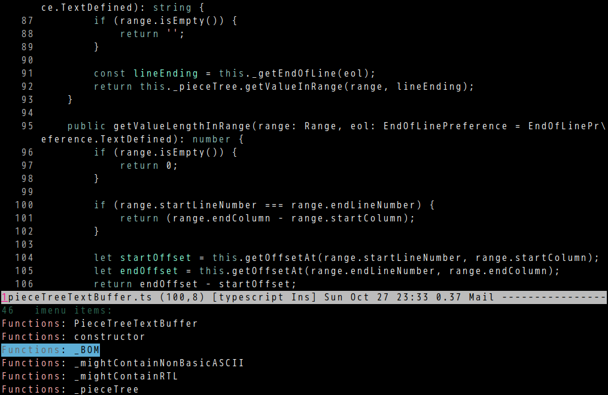

counsel-etags 1.9.0 is out
Counsel-etags is fast, energy-saving, and powerful code navigation solution.
This version can list tags in current buffer.
You can simply run M-x counsel-etags-list-tag-in-current-file.
Or set up imenu before M-x imenu or M-x helm-imenu or M-x counsel-imenu,
(setq imenu-create-index-function 'counsel-etags-imenu-default-create-index-function)
screenshot:

Aspell 0.60.8 will have direct support for camelCase words
Kevin Atkinso told me this good news.
Currently I'm using Emacs Lisp to check camel case words.
The new option --camel-case from aspell will definitely speed up the whole process.
Minimum Emacs setup,
(setq ispell-program-name "aspell")
(setq-default ispell-extra-args '("--sug-mode=ultra"
"--lang=en_US"))
;; Make sure new aspell is installed
(when (string-match-p "--camel-case"
(shell-command-to-string (concat ispell-program-name " --help")))
(push "--camel-case" ispell-extra-args))
Optionally, you could read What's the best spell check setup in emacs.
Javascript code navigation in counsel-etags
Javascript code navigation is supported by counsel-etags out of box.
It supports new javascript syntax like arrow function because counsel-etags is only frontend.
It reads tags file created by backend CLI program Ctags. Ctags uses regular expression to extract tag name from source code.
But there are some syntax which regular expression could not help.
For example, json object path can't be extracted by regular expression.
Given an object a in file A,
var a = {
b: {
c: 3,
}
};
File B has code let v1 = a.b.c;, how can we jump to the definition of the field c from json path a.b.c?
The solution is to use Lisp to parse code in file A and generate extra navigation data which could be appended to tags file generated by Ctags.
The algorithm is simple,
- Traverse all the field of object
ain file A. Use APIjs2-print-json-pathfromjs2-modeto get json path of current field. - The json path could be regarded as tags name. We've already got file name and line number. So there is enough information to create navigation data for tags file. Here is tags file format.
Necessary utilities are already provided by counsel-etags v1.8.7,
- After tags files is generated by Ctags, the hook
counsel-etags-after-update-tags-hookis executed. Users can append tags file in this hook -
(counsel-etags-tag-line code-snippet tag-name line-number byte-offset)return a line which could be appended into tags file
My current project uses a technology called styled-components which has an advanced feature theming.
It could dynamically change web application's appearance and is a critical technology for our application to support multiple customer. Application's theme is basically a file containing a huge json object. So it's important that developers can jump to the corresponding json object's field by json path.
Screencast

Code
(require 'counsel-etags)
(defun my-manual-update-tag-file (code-file tags-file)
(let* ((dir (file-name-directory tags-file))
(path (concat dir code-file))
curline
jp
tagstr)
(unless (featurep 'js2-mode) (require 'js2-mode))
(with-temp-buffer
(insert-file-contents path)
(js2-init-scanner)
(js2-do-parse)
(goto-char (point-min))
;; find all js object property names
(while (re-search-forward "\"?[a-z][a-zA-Z0-9]*\"?:" (point-max) t)
(when (setq jp (js2-print-json-path))
(setq curline (string-trim (buffer-substring-no-properties (line-beginning-position)
(line-end-position))))
(setq tagstr (concat tagstr
(counsel-etags-tag-line curline
jp
(count-lines 1 (point))
(point)))))
;; move focus to next search
(goto-char (line-end-position))))
(when tagstr
(with-temp-buffer
(insert-file-contents tags-file)
(goto-char (line-end-position))
(insert (format "\n\014\n%s,%d\n%s" code-file 0 tagstr))
(write-region (point-min) (point-max) tags-file nil :silent)))))
(defun counsel-etags-after-update-tags-hook-setup (tags-file)
(my-manual-update-tag-file "frontend/theming/themes/darkTheme.js" tags-file)
(my-manual-update-tag-file "frontend/theming/themes/lightTheme.js" tags-file))
(add-hook 'counsel-etags-after-update-tags-hook 'counsel-etags-after-update-tags-hook-setup)
dianyou 0.0.3 is out
I created dianyou (电邮) to solve improve my Gnus work flow.
Search mails
Most Gnus users use gnus-group-make-nnir-group to search mails. But it's not usable in "Summary Buffer". Its IMAP SEARCH Command is hard to use.
It could be replaced by dianyou-group-make-nnir-group which supports shortcuts. For example, you can input "f John s 1y2w2d" and select "imap" when Gnus asks the question "Imap Search in". It means search mails from John since 1 year, 2 weeks and 2 days ago.
Auto complete email address
I'm too lazy to set up my contacts. It would be better that Gnus could automatically collect email addresses from all received mails. So I created the command dianyou-insert-email-address-from-received-mails. The inserted email address is also inserted into the global variable dianyou-email-address-history which could be persisted by session.
Switch Gnus buffer
One annoying thing in Gnus is pressing "q" will close opened folder. I often pressed "q" when I only intended to switch to another Gnus buffer. Now I can use dianyou-switch-gnus-buffer.
Paste image from clipboard
Use dianyou-paste-image-from-clipboard. CLI program xclip should be installed at first.
My favorite Richard Stallman interviews
I've watched/listened many Richard Stallman interviews. Some hosts are really bad. They know nothing about technology and are too aggressive.
But good interviewers still exist. Here are top 3 interviews I recommend:
- Interview with Richard Stallman from Hacker Public Radio. The interviewer is technical by himself so he can ask right questions and understand answers immediately.
- Richard Stallman on Free Software: Freedom is Worth the Inconvenience from Singularity Weblog. Nikola Danaylov focus more on ethic perspective of technology.
- Dr Diane Hamilton Interviews Richard Stallman. Diane Hamilton is good listener and just let Richard Stallman talk. Stallman quoted text from Chinese ancient novel San Guo (Three Kingdom) in the interview.
Enhance Emacs Evil global markers
Global evil marker is saved in evil-global-markers-history by session.el.
Insert below code int ~/.emacs,
(defvar evil-global-markers-history nil)
(defun my-forward-line (lnum)
"Forward LNUM lines."
(setq lnum (string-to-number lnum))
(when (and lnum (> lnum 0))
(goto-char (point-min))
(forward-line (1- lnum))))
(defadvice evil-set-marker (before evil-set-marker-before-hack activate)
(let* ((args (ad-get-args 0))
(c (nth 0 args))
(pos (or (nth 1 args) (point))))
;; only rememeber global markers
(when (and (>= c ?A) (<= c ?Z) buffer-file-name)
(setq evil-global-markers-history
(delq nil
(mapcar `(lambda (e)
(unless (string-match (format "^%s@" (char-to-string ,c)) e)
e))
evil-global-markers-history)))
(setq evil-global-markers-history
(add-to-list 'evil-global-markers-history
(format "%s@%s:%d:%s"
(char-to-string c)
(file-truename buffer-file-name)
(line-number-at-pos pos)
(string-trim (buffer-substring-no-properties (line-beginning-position)
(line-end-position)))))))))
(defadvice evil-goto-mark-line (around evil-goto-mark-line-hack activate)
(let* ((args (ad-get-args 0))
(c (nth 0 args))
(orig-pos (point)))
(condition-case nil
ad-do-it
(error (progn
(when (and (eq orig-pos (point)) evil-global-markers-history)
(let* ((markers evil-global-markers-history)
(i 0)
m
file
found)
(while (and (not found) (< i (length markers)))
(setq m (nth i markers))
(when (string-match (format "\\`%s@\\(.*?\\):\\([0-9]+\\):\\(.*\\)\\'"
(char-to-string c))
m)
(setq file (match-string-no-properties 1 m))
(setq found (match-string-no-properties 2 m)))
(setq i (1+ i)))
(when file
(find-file file)
(my-forward-line found)))))))))
(defun counsel-evil-goto-global-marker ()
"Goto global evil marker."
(interactive)
(unless (featurep 'ivy) (require 'ivy))
(ivy-read "Goto global evil marker"
evil-global-markers-history
:action (lambda (m)
(when (string-match "\\`[A-Z]@\\(.*?\\):\\([0-9]+\\):\\(.*\\)\\'" m)
(let* ((file (match-string-no-properties 1 m))
(linenum (match-string-no-properties 2 m)))
(find-file file)
(my-forward-line linenum))))))
evil-goto-mark-line will access marker in evil-global-markers-history.
Steps to install Emacs 27 for testing
The Emacs is not for daily usage. Only for testing.
sudo apt install built-essential automake autoconf texinfo # optional if they are already installed
git clone https://git.savannah.gnu.org/git/emacs.git
cd emacs && ./configure CFLAGS=-no-pie --without-x --without-dbus --without-sound --with-gnutls=no && make
src/emacs # start emacs
How to spell check function/variable in Emacs
CREATED:
UPDATED:
This article explains how to spell check camel cased names of functions and variables in Emacs. It uses options --run-together from GNU Aspell.
But this solution is not perfect. It wrongly identifies two character sub-word as typo. For example, "onChange" is regarded as typo because the sub-word "on" is identified as typo. Another issue is namespace of function name. For example, "MS" from "MSToggleButton" is alias of "Microsoft". If "MS" is identified as typo, every word containing "MS" is regarded as typo.
In this article,
- I will explain how Emacs spell checker works
- Then we study the algorithm of aspell
- Finally, a complete solution which works with both aspell and hunspell is provided
Emacs built in plugin Fly Spell does spell checking. It passes the options and plain text to command line tool aspell. Aspell sends back the typos into Fly Spell. Fly Spell then picks up typos to display. For example, flyspell-prog-mode only displays typos in comments and strings.
Aspell doesn't understand syntax of any programming language. It simply reports typos in plain text.
Aspell has two options:
-
--run-together-limitis "Maximum number of words can be strung together" -
--run-together-minis "Minimal length of sub-words"
Aspell C++ code has to be studied in order to understand above two options. Let's start from Working::check_word in modules/speller/default/suggest.cpp.
Here is code,
class Working : public Score {
unsigned check_word(char * word, char * word_end, CheckInfo * ci, unsigned pos = 1);
};
unsigned Working::check_word(char * word, char * word_end, CheckInfo * ci,
/* it WILL modify word */
unsigned pos)
{
// check the whole word before go into run-together mode
unsigned res = check_word_s(word, ci);
// if `res` is true, it's a valid word, don't bother run-together
if (res) return pos + 1;
// it's typo because number of sub-words is greater than "--run-together-limit"
if (pos + 1 >= sp->run_together_limit_) return 0;
// `i` is the `end` of sub-word, the poition AFTER last character of sub-word
for (char * i = word + sp->run_together_min_;
// already checked the whole word; besides, any sub-word whose size is less
// than "--run-together-min" is regarded as invalid
i <= word_end - sp->run_together_min_;
++i)
{
char t = *i;
// read the sub-word by set the character at `end` position to '\0'
*i = '\0';
res = check_word_s(word, ci);
// restore original character at `end` position
*i = t;
// Current sub-word is invalid, we need append the character at current
// `end` position to creata new sub-word.
// Inncrement `i` because `i` always points to the `end` of sub-word
if (!res) continue;
// Current sub-word is valid, strip it from the whole word to create a totally
// new word for `check_word`, `check_word` is a recursive function
res = check_word(i, word_end, ci + 1, pos + 1);
if (res) return res;
}
memset(ci, 0, sizeof(CheckInfo));
return 0;
}
Say first parameter of check_word is "hisHelle",
-
wordpoints to string "hisHelle" (in C/C++, string is character array. The last character of array is character'\0') -
sp->run_together_min_is 3, soiinitially points to the character "H", at the end of sub-word "his" -
check_word_sreturntruefor sub-word "his" - So we strip "his" from "hisHelle" and recursively call
check_wordto check new word "Helle" - In the new context of
check_word, we extract "Hel" from "Helle" initially - "Hel" is invalid. So "Hell" is extracted from "Helle". The remaining charcter "e" is a treated as as new word with
check_wordrecursively applying on it - "e" is not valid It's the last word could be extracted. So recursion is over. It's concluded that "hisHelle" is a typo
Key points:
-
--run-together-limitcould be bigger with enough memory. It's default value is 8. I prefer 16. -
--run-together-mincan't be 2 because too many typos are combination of "correct" two character sub-words ("hehe", "isme", …) -
--run-together-mincan't be greater than 3, or else, too many "correct" three character sub-words are regarded as invalid ("his", "her", "one", "two") - So
--run-together-minshould always be 3
If --run-together-min is 3, the word "onChange" is typo because the first two characters "on" is typo by aspell. This is obviously wrong.
The solution is a Emacs Lisp predicate which supports both aspell and hunspell.
A predicate could be attached to specific major-mode. The predicate file all the typos reported by CLI program. If predicate returns t, the feed in typo is finally approved to be typo,
A example of predicate for js2-mode,
(defun js-flyspell-verify ()
(let* ((font-face (get-text-property (- (point) 1) 'face))
(word (thing-at-point 'word)))
(message "font-face=%s word=%s" font-face word)
t))
(put 'js2-mode 'flyspell-mode-predicate 'js-flyspell-verify)
Typo candidates are filtered by js-flyspell-verify. So predicate is where to fix typos wrongly reported by CLI program.
Here is complete setup you can paste into .emacs (I setup for js2-mode and rjsx-mode but code is generic enough).
Please note function split-camel-case splits a camel case word into a list of sub-words. Sub-word with less one or two characters is not typo.
(defun split-camel-case (word)
"Split camel case WORD into a list of strings.
Ported from 'https://github.com/fatih/camelcase/blob/master/camelcase.go'."
(let* ((case-fold-search nil)
(len (length word))
;; ten sub-words is enough
(runes [nil nil nil nil nil nil nil nil nil nil])
(runes-length 0)
(i 0)
ch
(last-class 0)
(class 0)
rlt)
;; split into fields based on class of character
(while (< i len)
(setq ch (elt word i))
(cond
;; lower case
((and (>= ch ?a) (<= ch ?z))
(setq class 1))
;; upper case
((and (>= ch ?A) (<= ch ?Z))
(setq class 2))
((and (>= ch ?0) (<= ch ?9))
(setq class 3))
(t
(setq class 4)))
(cond
((= class last-class)
(aset runes
(1- runes-length)
(concat (aref runes (1- runes-length)) (char-to-string ch))))
(t
(aset runes runes-length (char-to-string ch))
(setq runes-length (1+ runes-length))))
(setq last-class class)
;; end of while
(setq i (1+ i)))
;; handle upper case -> lower case sequences, e.g.
;; "PDFL", "oader" -> "PDF", "Loader"
(setq i 0)
(while (< i (1- runes-length))
(let* ((ch-first (aref (aref runes i) 0))
(ch-second (aref (aref runes (1+ i)) 0)))
(when (and (and (>= ch-first ?A) (<= ch-first ?Z))
(and (>= ch-second ?a) (<= ch-second ?z)))
(aset runes (1+ i) (concat (substring (aref runes i) -1) (aref runes (1+ i))))
(aset runes i (substring (aref runes i) 0 -1))))
(setq i (1+ i)))
;; construct final result
(setq i 0)
(while (< i runes-length)
(when (> (length (aref runes i)) 0)
(setq rlt (add-to-list 'rlt (aref runes i) t)))
(setq i (1+ i)))
rlt))
(defun flyspell-detect-ispell-args (&optional run-together)
"If RUN-TOGETHER is true, spell check the CamelCase words.
Please note RUN-TOGETHER will make aspell less capable. So it should only be used in prog-mode-hook."
;; force the English dictionary, support Camel Case spelling check (tested with aspell 0.6)
(let* ((args (list "--sug-mode=ultra" "--lang=en_US"))args)
(if run-together
(setq args (append args '("--run-together" "--run-together-limit=16"))))
args))
;; {{ for aspell only, hunspell does not need setup `ispell-extra-args'
(setq ispell-program-name "aspell")
(setq-default ispell-extra-args (flyspell-detect-ispell-args t))
;; }}
;; ;; {{ hunspell setup, please note we use dictionary "en_US" here
;; (setq ispell-program-name "hunspell")
;; (setq ispell-local-dictionary "en_US")
;; (setq ispell-local-dictionary-alist
;; '(("en_US" "[[:alpha:]]" "[^[:alpha:]]" "[']" nil ("-d" "en_US") nil utf-8)))
;; ;; }}
(defvar extra-flyspell-predicate '(lambda (word) t)
"A callback to check WORD. Return t if WORD is typo.")
(defun my-flyspell-predicate (word)
"Use aspell to check WORD. If it's typo return t."
(let* ((cmd (cond
;; aspell: `echo "helle world" | aspell pipe`
((string-match-p "aspell$" ispell-program-name)
(format "echo \"%s\" | %s pipe"
word
ispell-program-name))
;; hunspell: `echo "helle world" | hunspell -a -d en_US`
(t
(format "echo \"%s\" | %s -a -d en_US"
word
ispell-program-name))))
(cmd-output (shell-command-to-string cmd))
rlt)
;; (message "word=%s cmd=%s" word cmd)
;; (message "cmd-output=%s" cmd-output)
(cond
((string-match-p "^&" cmd-output)
;; it's a typo because at least one sub-word is typo
(setq rlt t))
(t
;; not a typo
(setq rlt nil)))
rlt))
(defun js-flyspell-verify ()
(let* ((case-fold-search nil)
(font-matched (memq (get-text-property (- (point) 1) 'face)
'(js2-function-call
js2-function-param
js2-object-property
js2-object-property-access
font-lock-variable-name-face
font-lock-string-face
font-lock-function-name-face
font-lock-builtin-face
rjsx-text
rjsx-tag
rjsx-attr)))
subwords
word
(rlt t))
(cond
((not font-matched)
(setq rlt nil))
;; ignore two character word
((< (length (setq word (thing-at-point 'word))) 2)
(setq rlt nil))
;; handle camel case word
((and (setq subwords (split-camel-case word)) (> (length subwords) 1))
(let* ((s (mapconcat (lambda (w)
(cond
;; sub-word wholse length is less than three
((< (length w) 3)
"")
;; special characters
((not (string-match-p "^[a-zA-Z]*$" w))
"")
(t
w))) subwords " ")))
(setq rlt (my-flyspell-predicate s))))
(t
(setq rlt (funcall extra-flyspell-predicate word))))
rlt))
(put 'js2-mode 'flyspell-mode-predicate 'js-flyspell-verify)
(put 'rjsx-mode 'flyspell-mode-predicate 'js-flyspell-verify)
UPDATE: Now you can use wucuo. It's an out of box solution supporting both aspell and hunspell.